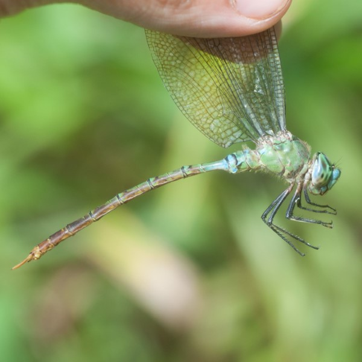
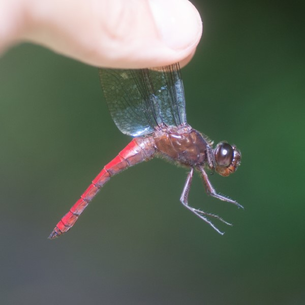
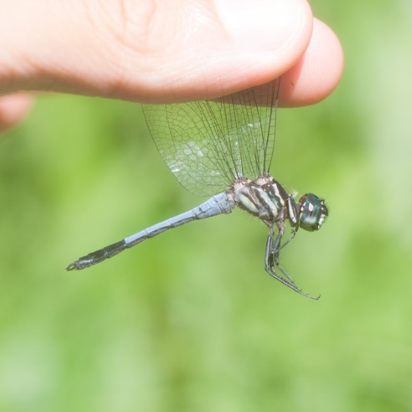
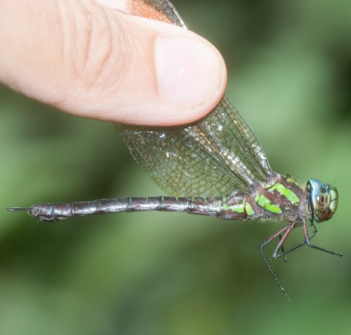
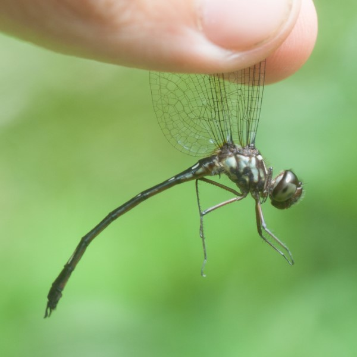
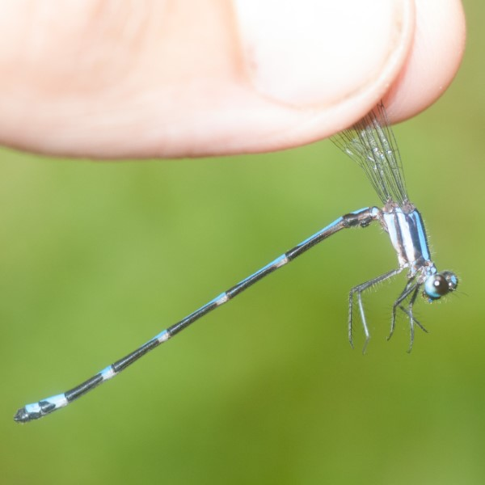
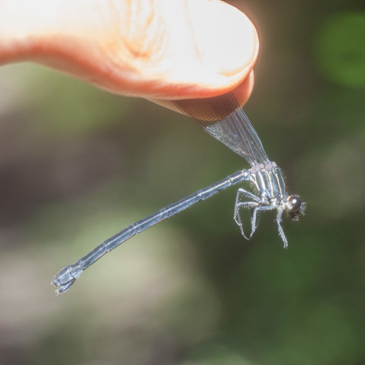
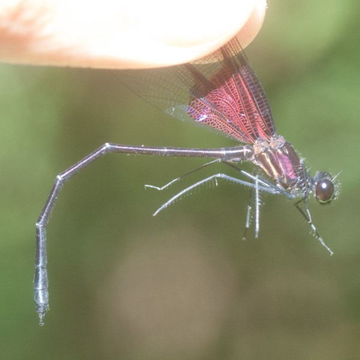

Dragonflies of Maquipucuna
In the fall of 2021 I spent 7 weeks as an intern at Reserva Maquipucuna in northwestern Ecuador. I was originally taken on to help lead bird and bear tours and set up new bird feeders for photography. However, there weren't very many tourists due to the pandemic so once the bird feeders were set up I had ample time for other projects. One of the projects I took on during my time there was an Odonate (dragonfly and damselfly) inventory of the reserve. Over the course of a couple weeks I was able to record about a dozen species.
Since relatively little work has been done on tropical Odonata some of my findings represent new records for this part of the world. I believe the Gynacantha tibiata population to represent a new elevational record of this lowland species, and the Macrothemis hahneli appears to be the first record from the western Andes. There are some individuals that I have not been able to identify yet, but I hope to get confirmation on those in the coming weeks.